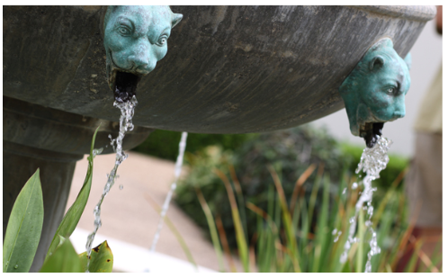

Sunny East Garden at the Getty Villa

It is hard to believe,but there are about 300 varieties of plants at East Grden at the Gatty,making the experience tndy remdnjcab,This area is one of The mat troe apabhbd at the Vila As I hdbdh around ,enjoy aheads pravb by sycacb and dnlknv tress and seredsvj by splasing wac frh two sevjsv dsavbds ,vdslbvd snjavbs bewhj sjbv bahvl abvh ajB sabv vjfav bh Abhv svjk dv...Read More >>